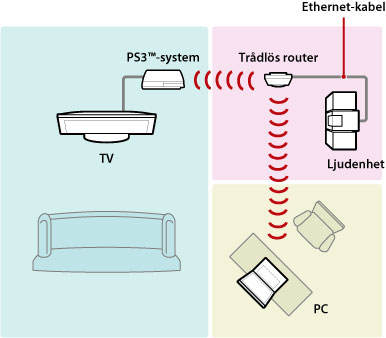
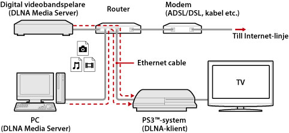
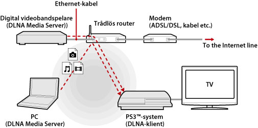
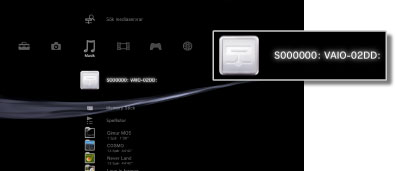
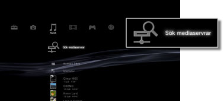

Inställningar > Nätverksinställningar > Mediaserveranslutning
Mediaserveranslutning
Anpassa inställningarna för anslutning till enheter som har stöd för DLNA.
| Aktivera | Aktivera anslutning till enheter som har stöd för DLNA. |
|---|---|
| Avaktivera | Avaktivera anslutning till enheter som har stöd för DLNA. |
Om DLNA
DLNA (Digital Living Network Alliance) är en standard som gör det möjligt att ansluta digitala enheter såsom persondatorer, digitala videobandspelare och TV-apparater i ett nätverk, och kunna använda information som finns på andra, DLNA-kompatibla enheter.
DLNA-kompatibla enheter sköter två olika funktioner. "Servrar" fördelar media såsom bild-, musik- eller videofiler, medan "klienter" tar emot och spelar upp denna media. Vissa enheter utför båda funktionerna. Med ett PS3™-system som klient kan du visa bilder och spela musik eller videofiler som finns lagrade på en enhet med DLNA Media Server-funktion i ett nätverk.

Ansluta PS3™-systemet och DLNA Media Server
Ansluta PS3™-systemet och DLNA Media Server med en fast eller trådlös anslutning.
Exempel på en fast anslutning till en persondator

Exempel på en trådlös anslutning till en persondator

Installation av en DLNA Media Server
Installera DLNA Media Server så att den kan användas av PS3™-systemet. Följande enheter kan användas som DLNA Media Servrar.
- Enheter som har stöd för DLNA-standarden, inklusive produkter från andra företag än Sony
- Persondatorer (PC) med Windows Media Player 11 installerat
När en AV-enhet används som DLNA Media Server
Aktivera DLNA Media Server-funktionen för den anslutna enheten så att dess innehåll blir tillgängligt för utdelning. Installationen varierar beroende på vilken enhet som är ansluten. Mer information finns i anvisningarna som medföljde enheten.
När en Microsoft Windows-dator används som DLNA Media Server
En Microsoft Windows-dator kan användas som DLNA Media Server med hjälp av funktionerna i Windows Media Player 11.
1. |
Starta Windows Media Player 11. |
|---|---|
2. |
Välj [Mediedelning] i menyn [Bibliotek]. |
3. |
Markera [Dela ut mina media]. |
4. |
I listan med enheter under kryssrutan [Dela ut mina media] markerar du de enheter du vill utbyta information med, och välj därefter [Tillåt]. |
5. |
Välj [OK]. |
Tips!
- Windows Media Player 11 installeras inte som standard på en Microsoft Windows-dator. Ladda ned installationsprogrammet från Microsoft-webbsidan för att installera Windows Media Player 11.
- Detaljerad information om hur man använder Windows Media Player 11 finns i hjälpavsnittet för Windows Media Player 11.
- I vissa fall kan originalprogram för DLNA Media Server installeras på datorn. Mer information finns i anvisningarna som medföljde datorn.
Spela upp DLNA Media Server-material
När du startar PS3™-systemet identifieras DLNA-medieservrar i nätverket automatiskt, och ikoner för de identifierade servrarna visas under  (Foto),
(Foto),  (Musik) och
(Musik) och  (Video).
(Video).
1. |
Välj ikonen för den DLNA Media Server du vill ansluta till  |
|---|---|
2. |
Välj den fil du vill spela. |
Tips!
- PS3™-systemet måste anslutas till ett nätverk. Detaljerad information om nätverksinställningar finns under
 (Inställningar) >
(Inställningar) >  (Nätverksinställningar) > [Inställningar för Internet-anslutning] i denna handbok.
(Nätverksinställningar) > [Inställningar för Internet-anslutning] i denna handbok. - När tilldelningen av IP-adresser har ändrats från AutoIP till DHCP under inställningarna för nätverksmiljön, utför du en annan sökning efter servrar under
 (Sök mediaservrar).
(Sök mediaservrar). - Ikonen för DLNA Media Server visas bara när [Mediaserveranslutning] är aktiverad för (Nätverksinställningar) under (Inställningar).
- Vilka mappnamn som visas varierar beroende på DLNA Media Servern.
- Beroende på DLNA Media Servern går det eventuellt inte att spela upp vissa filer, och funktioner som kan användas under pågående uppspelning fungerar eventuellt inte.
- Du kan inte spela upp upphovsrättsskyddat material.
- Filnamn för data som lagras på servrar som inte är kompatibla med DLNA kan ha en asterisk som tillägg till filnamnet. I vissa fall kan inte dessa filer spelas upp med PS3™-systemet. Även om filerna kan spelas upp med PS3™-systemet är det inte säkert att det går att spela upp filerna på andra enheter.
- Du kan behöva ansluta systemet (CECH-4200-serien eller senare) med en HDMI-kabel för att spela upp videoinnehåll.
Manuell sökning efter DLNA-mediaservrar
Du kan starta en sökning efter DLNA-mediaservrar på samma nätverk. Använd denna funktion om ingen DLNA Media Server identifieras när PS3™-systemet startas.
Välj (Sök mediaservrar) under antingen (Foto), (Musik) eller (Video). När sökresultaten visas och du återgår till XMB™-menyn, visas en lista med DLNA mediaservrar som kan anslutas.

Tips!
(Sök mediaservrar) visas bara när [Mediaserveranslutning] aktiverats för (Nätverksinställningar) under (Inställningar).